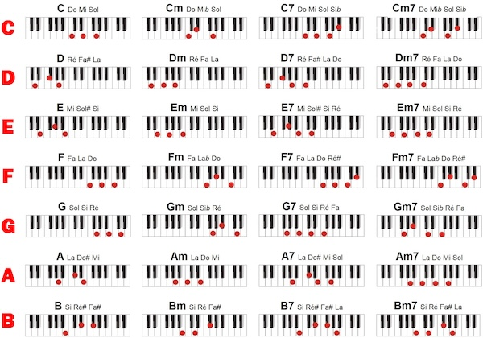

|
Marketing Factory Chef de produit Nouveau Marketing |
Le piano... pour ceux qui ont mon niveau (+/- nul) | ||||||||||||||||||||||||||||||||||||||||||||||||||||||||||||||||||||||||||||||||||||||||||||||||||||||||||||||||||||||||||||||||||||||||||||||||||||||||||||||||||||||||||||||||||||||||||||||||||||||||||||||||||||||||||||||
|
Bonjour à tous, Enfin, voila ce que vous trouverez sur ce site :
La liste des accords de piano à connaître par coeur Quelques informations sur le solfège Les exercices (du moins ceux que je fais et qui me conviennent) Quelques partitions (avec à chaque fois trois fichiers : la partition elle-même au format pdf, la musique au format midi et le fichier de saisie sur le logiciel notation). Mes deux centres d'intérêts sont le RAP et l'opéra. Le rap se prête peu à l'instrument pianistique, je me rabats sur l'opéra, mon objectif est de jouer tous les opéras (dont le livret est italien) de Mozart, Rossini, Verdi et quelques autres. J'ai commencé par le Cosi et le Don Giovanni. Vous trouverez aussi quelques standards (genre Beatles, Sinatra...) et un peu de variété française. Mon rythme est un nouveau morceau par mois, vous pouvez donc revenir tous les mois pour trouver le nouveau. Si vous voulez contribuer à ce site vous pouvez m'envoyer vos partitions (sous format midi ou pdf et impérativement écrite par vous même) je les mettrais à disposition avec vos coordonnées. L'immense difficulté de trouver des partitions jouable au piano sur internet est réelle, vous trouverez une fois la partition voix, une autre fois la partition accompagnement ou pire les scores pour 15 instuments. Quelques liens sur les sites utiles (attention, il y a de tout) Les logiciels utiles pour apprendre le piano, le solfège, les rythmes, l'édition de partition Page complète sur le premier prélude de Bach en DO majeur : j'ai chercher longtemps une simplification de partition pour ce prélude et je n'ai rien trouvé ... Dites-moi si cette vision vous est utile Et pour moi qui vous donne cette "leçon" de piano aujourd'hui (c'est le nom du site), je dirais : "when you don't know it, teach it !"

Le solfège est une nouvelle langue qu'il faut apprendre pour jouer de la musique. C'est plutôt facile, voire amusant, mais de toute façon nécessaire. Voici quelques astuces pour apprendre plus vite. Astuce 1 : repérer les notes sur les portées de clés de SOL et de FA (c'est beaucoup plus simple que les tables de multiplication). Il faut apprendre les deux en même temps.
Astuce 2 : Les numéros des doigts
Astuce 3 : la gamme de DO et les autres. Une fois que vous connaissez les gammes passez vite à l'exercice n°1 pour les jouer des deux mains
Faire des gammes est important pour quatre raisons : Astuce 4 : les armures ou armatures (vous savez les dièses et bémols à la clé) en cours de réalisation
Astuce 5 : les intervalles
Astuce 6 : la correspondance des notes françaises (DO, RE, MI ...) avec les notes anglo-saxonnes (A, B, C ...)
Astuce 7 : les accords
Télécharger
la fiche des accords à connaitre partie 1
Toutes les gammes majeures : le but est de jouer ces gammes d'une main aller-retour (montant et descendant). Puis de les jouer des deux mains, lentement au début puis de plus en plus vite. Toutes les gammes mineures : idem gammes majeures Poursuite : c'est le nom que j'ai donné à cet exercice (il est peut-être impropre - le nom pas l'exercice) et vous pouvez varier les plaisirs Agilité des doigts : certains de ces exercices sont impossibles à faire pour moi... vous y arriverez peut-être. Accord : passer très vite d'un accord à l'autre
Après tout, on apprend bien à accompagner à la guitare avec trois accords en une soirée au coin du feu. Alors ? pourquoi pas aussi pour le piano ? ...
2/ un accord mineur ? on bouge le doigt du milieu d'une note à gauche, au vol. 3/ un accord de 7eme ou 7M ...plus tard 4/ on joue juste la tierce mineure, on compliquera plus tard 5/ 9 ? 9b ? 6 ? plus tard, ce sera la récompense 6/ on finit par appprendre cela par coeur 7/ on commence à chorusser en utilisant les notes des accords ... 8/ on utilise des bouts de gammes pentatoniques, blues, ...
Partitions et téléchargement
J'ai même pensé aux partitions vierges en html et en PDF à imprimer vous-même (clic droit de souris sur PDF puis enregistrer-sous...)... sympa, non !
Vous pouvez utiliser toutes les informations de ce site, librement et en faire ce que bon vous semble, sauf les vendre. Il s'agit d'un copyleft (par opposition au copyright). Une demande par mail est exigée( ) pour toutes autres utilisations. Il y a même des visiteurs qui en ont fait un document téléchargeable ici.
|
||||||||||||||||||||||||||||||||||||||||||||||||||||||||||||||||||||||||||||||||||||||||||||||||||||||||||||||||||||||||||||||||||||||||||||||||||||||||||||||||||||||||||||||||||||||||||||||||||||||||||||||||||||||||||||||
|
TSLM |
LNM |
chef de produit |
|
@kratiroff |
|||||||||||||||||||||||||||||||||||||||||||||||||||||||||||||||||||||||||||||||||||||||||||||||||||||||||||||||||||||||||||||||||||||||||||||||||||||||||||||||||||||||||||||||||||||||||||||||||||||||||||||||||||||||||||||||
{kind=link}
{kind=link}